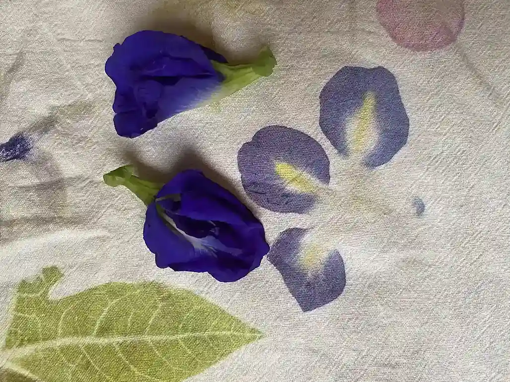

En Finca Natural Mystic, cada día es una celebración de la vida. Rodeados de la exuberante vegetación de la Sierra Nevada, hemos cultivado un jardín lleno de colores y aromas. Al contemplar nuestras flores, nos preguntamos: ¿cómo podemos llevar esta belleza natural a nuestras telas? Así nació nuestra fascinación por el tatakizome, una antigua técnica japonesa que nos permite imprimir directamente sobre la tela los colores y texturas de las plantas.
¿Alguna vez has imaginado transformar las delicadas hojas de un árbol en un estampado único
en una tela? El tatakizome, una antigua técnica japonesa, te invita a hacer precisamente eso.
Este arte ancestral consiste en martillar flores y hojas sobre una tela para extraer sus
pigmentos naturales y crear diseños sorprendentes. Es una danza entre la naturaleza y la
creatividad, donde cada pieza es una obra de arte única.
Materiales sencillos, resultados sorprendentes
Para adentrarte en el mundo del tatakizome, necesitarás pocos materiales:
Cada planta tiene su propia paleta de colores y texturas. Algunas hojas te sorprenderán con tonos intensos y vibrantes, mientras que otras ofrecerán sutiles matices. ¡La experimentación es la clave!
Para que tus creaciones duren más tiempo, sigue estos consejos:
En Finca Natural Mystic, te invitamos a descubrir el maravilloso mundo del tatakizome. Ofrecemos talleres para todas las edades, donde podrás aprender esta técnica ancestral y conectar con la naturaleza de una manera especial.
¡Anímate a crear tu propia obra maestra y llévate a casa un pedazo de la naturaleza!
{{ state.text }} {{ article.title }} . {{ state.text }} {{ article.title }}